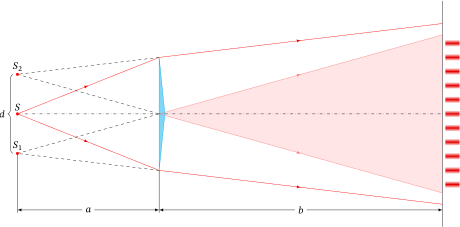
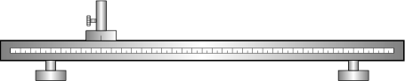

Оптика
\(\newcommand{\footnotename}{footnote}\)
\(\def \LWRfootnote {1}\)
\(\newcommand {\footnote }[2][\LWRfootnote ]{{}^{\mathrm {#1}}}\)
\(\newcommand {\footnotemark }[1][\LWRfootnote ]{{}^{\mathrm {#1}}}\)
\(\let \LWRorighspace \hspace \)
\(\renewcommand {\hspace }{\ifstar \LWRorighspace \LWRorighspace }\)
\(\newcommand {\TextOrMath }[2]{#2}\)
\(\newcommand {\mathnormal }[1]{{#1}}\)
\(\newcommand \ensuremath [1]{#1}\)
\(\newcommand {\LWRframebox }[2][]{\fbox {#2}} \newcommand {\framebox }[1][]{\LWRframebox } \)
\(\newcommand {\setlength }[2]{}\)
\(\newcommand {\addtolength }[2]{}\)
\(\newcommand {\setcounter }[2]{}\)
\(\newcommand {\addtocounter }[2]{}\)
\(\newcommand {\arabic }[1]{}\)
\(\newcommand {\number }[1]{}\)
\(\newcommand {\noalign }[1]{\text {#1}\notag \\}\)
\(\newcommand {\cline }[1]{}\)
\(\newcommand {\directlua }[1]{\text {(directlua)}}\)
\(\newcommand {\luatexdirectlua }[1]{\text {(directlua)}}\)
\(\newcommand {\protect }{}\)
\(\def \LWRabsorbnumber #1 {}\)
\(\def \LWRabsorbquotenumber "#1 {}\)
\(\newcommand {\LWRabsorboption }[1][]{}\)
\(\newcommand {\LWRabsorbtwooptions }[1][]{\LWRabsorboption }\)
\(\def \mathchar {\ifnextchar "\LWRabsorbquotenumber \LWRabsorbnumber }\)
\(\def \mathcode #1={\mathchar }\)
\(\let \delcode \mathcode \)
\(\let \delimiter \mathchar \)
\(\def \oe {\unicode {x0153}}\)
\(\def \OE {\unicode {x0152}}\)
\(\def \ae {\unicode {x00E6}}\)
\(\def \AE {\unicode {x00C6}}\)
\(\def \aa {\unicode {x00E5}}\)
\(\def \AA {\unicode {x00C5}}\)
\(\def \o {\unicode {x00F8}}\)
\(\def \O {\unicode {x00D8}}\)
\(\def \l {\unicode {x0142}}\)
\(\def \L {\unicode {x0141}}\)
\(\def \ss {\unicode {x00DF}}\)
\(\def \SS {\unicode {x1E9E}}\)
\(\def \dag {\unicode {x2020}}\)
\(\def \ddag {\unicode {x2021}}\)
\(\def \P {\unicode {x00B6}}\)
\(\def \copyright {\unicode {x00A9}}\)
\(\def \pounds {\unicode {x00A3}}\)
\(\let \LWRref \ref \)
\(\renewcommand {\ref }{\ifstar \LWRref \LWRref }\)
\( \newcommand {\multicolumn }[3]{#3}\)
\(\require {textcomp}\)
\(\require {colortbl}\)
\(\let \LWRorigcolumncolor \columncolor \)
\(\renewcommand {\columncolor }[2][named]{\LWRorigcolumncolor [#1]{#2}\LWRabsorbtwooptions }\)
\(\let \LWRorigrowcolor \rowcolor \)
\(\renewcommand {\rowcolor }[2][named]{\LWRorigrowcolor [#1]{#2}\LWRabsorbtwooptions }\)
\(\let \LWRorigcellcolor \cellcolor \)
\(\renewcommand {\cellcolor }[2][named]{\LWRorigcellcolor [#1]{#2}\LWRabsorbtwooptions }\)
\(\newcommand {\intertext }[1]{\text {#1}\notag \\}\)
\(\let \Hat \hat \)
\(\let \Check \check \)
\(\let \Tilde \tilde \)
\(\let \Acute \acute \)
\(\let \Grave \grave \)
\(\let \Dot \dot \)
\(\let \Ddot \ddot \)
\(\let \Breve \breve \)
\(\let \Bar \bar \)
\(\let \Vec \vec \)
\(\let \symnormal \mathit \)
\(\let \symliteral \mathrm \)
\(\let \symbb \mathbb \)
\(\let \symbbit \mathbb \)
\(\let \symcal \mathcal \)
\(\let \symscr \mathscr \)
\(\let \symfrak \mathfrak \)
\(\let \symsfup \mathsf \)
\(\let \symsfit \mathit \)
\(\let \symbfsf \mathbf \)
\(\let \symbfup \mathbf \)
\(\newcommand {\symbfit }[1]{\boldsymbol {#1}}\)
\(\let \symbfcal \mathcal \)
\(\let \symbfscr \mathscr \)
\(\let \symbffrak \mathfrak \)
\(\let \symbfsfup \mathbf \)
\(\newcommand {\symbfsfit }[1]{\boldsymbol {#1}}\)
\(\let \symup \mathrm \)
\(\let \symbf \mathbf \)
\(\let \symit \mathit \)
\(\let \symtt \mathtt \)
\(\let \symbffrac \mathbffrac \)
\(\newcommand {\mathfence }[1]{\mathord {#1}}\)
\(\newcommand {\mathover }[1]{#1}\)
\(\newcommand {\mathunder }[1]{#1}\)
\(\newcommand {\mathaccent }[1]{#1}\)
\(\newcommand {\mathbotaccent }[1]{#1}\)
\(\newcommand {\mathalpha }[1]{\mathord {#1}}\)
\(\def\upAlpha{\unicode{x0391}}\)
\(\def\upBeta{\unicode{x0392}}\)
\(\def\upGamma{\unicode{x0393}}\)
\(\def\upDigamma{\unicode{x03DC}}\)
\(\def\upDelta{\unicode{x0394}}\)
\(\def\upEpsilon{\unicode{x0395}}\)
\(\def\upZeta{\unicode{x0396}}\)
\(\def\upEta{\unicode{x0397}}\)
\(\def\upTheta{\unicode{x0398}}\)
\(\def\upVartheta{\unicode{x03F4}}\)
\(\def\upIota{\unicode{x0399}}\)
\(\def\upKappa{\unicode{x039A}}\)
\(\def\upLambda{\unicode{x039B}}\)
\(\def\upMu{\unicode{x039C}}\)
\(\def\upNu{\unicode{x039D}}\)
\(\def\upXi{\unicode{x039E}}\)
\(\def\upOmicron{\unicode{x039F}}\)
\(\def\upPi{\unicode{x03A0}}\)
\(\def\upVarpi{\unicode{x03D6}}\)
\(\def\upRho{\unicode{x03A1}}\)
\(\def\upSigma{\unicode{x03A3}}\)
\(\def\upTau{\unicode{x03A4}}\)
\(\def\upUpsilon{\unicode{x03A5}}\)
\(\def\upPhi{\unicode{x03A6}}\)
\(\def\upChi{\unicode{x03A7}}\)
\(\def\upPsi{\unicode{x03A8}}\)
\(\def\upOmega{\unicode{x03A9}}\)
\(\def\itAlpha{\unicode{x1D6E2}}\)
\(\def\itBeta{\unicode{x1D6E3}}\)
\(\def\itGamma{\unicode{x1D6E4}}\)
\(\def\itDigamma{\mathit{\unicode{x03DC}}}\)
\(\def\itDelta{\unicode{x1D6E5}}\)
\(\def\itEpsilon{\unicode{x1D6E6}}\)
\(\def\itZeta{\unicode{x1D6E7}}\)
\(\def\itEta{\unicode{x1D6E8}}\)
\(\def\itTheta{\unicode{x1D6E9}}\)
\(\def\itVartheta{\unicode{x1D6F3}}\)
\(\def\itIota{\unicode{x1D6EA}}\)
\(\def\itKappa{\unicode{x1D6EB}}\)
\(\def\itLambda{\unicode{x1D6EC}}\)
\(\def\itMu{\unicode{x1D6ED}}\)
\(\def\itNu{\unicode{x1D6EE}}\)
\(\def\itXi{\unicode{x1D6EF}}\)
\(\def\itOmicron{\unicode{x1D6F0}}\)
\(\def\itPi{\unicode{x1D6F1}}\)
\(\def\itRho{\unicode{x1D6F2}}\)
\(\def\itSigma{\unicode{x1D6F4}}\)
\(\def\itTau{\unicode{x1D6F5}}\)
\(\def\itUpsilon{\unicode{x1D6F6}}\)
\(\def\itPhi{\unicode{x1D6F7}}\)
\(\def\itChi{\unicode{x1D6F8}}\)
\(\def\itPsi{\unicode{x1D6F9}}\)
\(\def\itOmega{\unicode{x1D6FA}}\)
\(\def\upalpha{\unicode{x03B1}}\)
\(\def\upbeta{\unicode{x03B2}}\)
\(\def\upvarbeta{\unicode{x03D0}}\)
\(\def\upgamma{\unicode{x03B3}}\)
\(\def\updigamma{\unicode{x03DD}}\)
\(\def\updelta{\unicode{x03B4}}\)
\(\def\upepsilon{\unicode{x03F5}}\)
\(\def\upvarepsilon{\unicode{x03B5}}\)
\(\def\upzeta{\unicode{x03B6}}\)
\(\def\upeta{\unicode{x03B7}}\)
\(\def\uptheta{\unicode{x03B8}}\)
\(\def\upvartheta{\unicode{x03D1}}\)
\(\def\upiota{\unicode{x03B9}}\)
\(\def\upkappa{\unicode{x03BA}}\)
\(\def\upvarkappa{\unicode{x03F0}}\)
\(\def\uplambda{\unicode{x03BB}}\)
\(\def\upmu{\unicode{x03BC}}\)
\(\def\upnu{\unicode{x03BD}}\)
\(\def\upxi{\unicode{x03BE}}\)
\(\def\upomicron{\unicode{x03BF}}\)
\(\def\uppi{\unicode{x03C0}}\)
\(\def\upvarpi{\unicode{x03D6}}\)
\(\def\uprho{\unicode{x03C1}}\)
\(\def\upvarrho{\unicode{x03F1}}\)
\(\def\upsigma{\unicode{x03C3}}\)
\(\def\upvarsigma{\unicode{x03C2}}\)
\(\def\uptau{\unicode{x03C4}}\)
\(\def\upupsilon{\unicode{x03C5}}\)
\(\def\upphi{\unicode{x03D5}}\)
\(\def\upvarphi{\unicode{x03C6}}\)
\(\def\upchi{\unicode{x03C7}}\)
\(\def\uppsi{\unicode{x03C8}}\)
\(\def\upomega{\unicode{x03C9}}\)
\(\def\italpha{\unicode{x1D6FC}}\)
\(\def\itbeta{\unicode{x1D6FD}}\)
\(\def\itvarbeta{\unicode{x03D0}}\)
\(\def\itgamma{\unicode{x1D6FE}}\)
\(\def\itdigamma{\mathit{\unicode{x03DD}}}\)
\(\def\itdelta{\unicode{x1D6FF}}\)
\(\def\itepsilon{\unicode{x1D716}}\)
\(\def\itvarepsilon{\unicode{x1D700}}\)
\(\def\itzeta{\unicode{x1D701}}\)
\(\def\iteta{\unicode{x1D702}}\)
\(\def\ittheta{\unicode{x1D703}}\)
\(\def\itvartheta{\unicode{x1D717}}\)
\(\def\itiota{\unicode{x1D704}}\)
\(\def\itkappa{\unicode{x1D705}}\)
\(\def\itvarkappa{\unicode{x1D718}}\)
\(\def\itlambda{\unicode{x1D706}}\)
\(\def\itmu{\unicode{x1D707}}\)
\(\def\itnu{\unicode{x1D708}}\)
\(\def\itxi{\unicode{x1D709}}\)
\(\def\itomicron{\unicode{x1D70A}}\)
\(\def\itpi{\unicode{x1D70B}}\)
\(\def\itvarpi{\unicode{x1D71B}}\)
\(\def\itrho{\unicode{x1D70C}}\)
\(\def\itvarrho{\unicode{x1D71A}}\)
\(\def\itsigma{\unicode{x1D70E}}\)
\(\def\itvarsigma{\unicode{x1D70D}}\)
\(\def\ittau{\unicode{x1D70F}}\)
\(\def\itupsilon{\unicode{x1D710}}\)
\(\def\itphi{\unicode{x1D719}}\)
\(\def\itvarphi{\unicode{x1D711}}\)
\(\def\itchi{\unicode{x1D712}}\)
\(\def\itpsi{\unicode{x1D713}}\)
\(\def\itomega{\unicode{x1D714}}\)
\(\let \lparen (\)
\(\let \rparen )\)
\(\newcommand {\cuberoot }[1]{\,{}^3\!\!\sqrt {#1}}\,\)
\(\newcommand {\fourthroot }[1]{\,{}^4\!\!\sqrt {#1}}\,\)
\(\newcommand {\longdivision }[1]{\mathord {\unicode {x027CC}#1}}\)
\(\newcommand {\mathcomma }{,}\)
\(\newcommand {\mathcolon }{:}\)
\(\newcommand {\mathsemicolon }{;}\)
\(\newcommand {\overbracket }[1]{\mathinner {\overline {\ulcorner {#1}\urcorner }}}\)
\(\newcommand {\underbracket }[1]{\mathinner {\underline {\llcorner {#1}\lrcorner }}}\)
\(\newcommand {\overbar }[1]{\mathord {#1\unicode {x00305}}}\)
\(\newcommand {\ovhook }[1]{\mathord {#1\unicode {x00309}}}\)
\(\newcommand {\ocirc }[1]{\mathord {#1\unicode {x0030A}}}\)
\(\newcommand {\candra }[1]{\mathord {#1\unicode {x00310}}}\)
\(\newcommand {\oturnedcomma }[1]{\mathord {#1\unicode {x00312}}}\)
\(\newcommand {\ocommatopright }[1]{\mathord {#1\unicode {x00315}}}\)
\(\newcommand {\droang }[1]{\mathord {#1\unicode {x0031A}}}\)
\(\newcommand {\leftharpoonaccent }[1]{\mathord {#1\unicode {x020D0}}}\)
\(\newcommand {\rightharpoonaccent }[1]{\mathord {#1\unicode {x020D1}}}\)
\(\newcommand {\vertoverlay }[1]{\mathord {#1\unicode {x020D2}}}\)
\(\newcommand {\leftarrowaccent }[1]{\mathord {#1\unicode {x020D0}}}\)
\(\newcommand {\annuity }[1]{\mathord {#1\unicode {x020E7}}}\)
\(\newcommand {\widebridgeabove }[1]{\mathord {#1\unicode {x020E9}}}\)
\(\newcommand {\asteraccent }[1]{\mathord {#1\unicode {x020F0}}}\)
\(\newcommand {\threeunderdot }[1]{\mathord {#1\unicode {x020E8}}}\)
\(\newcommand {\Bbbsum }{\mathop {\unicode {x2140}}\limits }\)
\(\newcommand {\oiint }{\mathop {\unicode {x222F}}\limits }\)
\(\newcommand {\oiiint }{\mathop {\unicode {x2230}}\limits }\)
\(\newcommand {\intclockwise }{\mathop {\unicode {x2231}}\limits }\)
\(\newcommand {\ointclockwise }{\mathop {\unicode {x2232}}\limits }\)
\(\newcommand {\ointctrclockwise }{\mathop {\unicode {x2233}}\limits }\)
\(\newcommand {\varointclockwise }{\mathop {\unicode {x2232}}\limits }\)
\(\newcommand {\leftouterjoin }{\mathop {\unicode {x27D5}}\limits }\)
\(\newcommand {\rightouterjoin }{\mathop {\unicode {x27D6}}\limits }\)
\(\newcommand {\fullouterjoin }{\mathop {\unicode {x27D7}}\limits }\)
\(\newcommand {\bigbot }{\mathop {\unicode {x27D8}}\limits }\)
\(\newcommand {\bigtop }{\mathop {\unicode {x27D9}}\limits }\)
\(\newcommand {\xsol }{\mathop {\unicode {x29F8}}\limits }\)
\(\newcommand {\xbsol }{\mathop {\unicode {x29F9}}\limits }\)
\(\newcommand {\bigcupdot }{\mathop {\unicode {x2A03}}\limits }\)
\(\newcommand {\bigsqcap }{\mathop {\unicode {x2A05}}\limits }\)
\(\newcommand {\conjquant }{\mathop {\unicode {x2A07}}\limits }\)
\(\newcommand {\disjquant }{\mathop {\unicode {x2A08}}\limits }\)
\(\newcommand {\bigtimes }{\mathop {\unicode {x2A09}}\limits }\)
\(\newcommand {\modtwosum }{\mathop {\unicode {x2A0A}}\limits }\)
\(\newcommand {\sumint }{\mathop {\unicode {x2A0B}}\limits }\)
\(\newcommand {\intbar }{\mathop {\unicode {x2A0D}}\limits }\)
\(\newcommand {\intBar }{\mathop {\unicode {x2A0E}}\limits }\)
\(\newcommand {\fint }{\mathop {\unicode {x2A0F}}\limits }\)
\(\newcommand {\cirfnint }{\mathop {\unicode {x2A10}}\limits }\)
\(\newcommand {\awint }{\mathop {\unicode {x2A11}}\limits }\)
\(\newcommand {\rppolint }{\mathop {\unicode {x2A12}}\limits }\)
\(\newcommand {\scpolint }{\mathop {\unicode {x2A13}}\limits }\)
\(\newcommand {\npolint }{\mathop {\unicode {x2A14}}\limits }\)
\(\newcommand {\pointint }{\mathop {\unicode {x2A15}}\limits }\)
\(\newcommand {\sqint }{\mathop {\unicode {x2A16}}\limits }\)
\(\newcommand {\intlarhk }{\mathop {\unicode {x2A17}}\limits }\)
\(\newcommand {\intx }{\mathop {\unicode {x2A18}}\limits }\)
\(\newcommand {\intcap }{\mathop {\unicode {x2A19}}\limits }\)
\(\newcommand {\intcup }{\mathop {\unicode {x2A1A}}\limits }\)
\(\newcommand {\upint }{\mathop {\unicode {x2A1B}}\limits }\)
\(\newcommand {\lowint }{\mathop {\unicode {x2A1C}}\limits }\)
\(\newcommand {\bigtriangleleft }{\mathop {\unicode {x2A1E}}\limits }\)
\(\newcommand {\zcmp }{\mathop {\unicode {x2A1F}}\limits }\)
\(\newcommand {\zpipe }{\mathop {\unicode {x2A20}}\limits }\)
\(\newcommand {\zproject }{\mathop {\unicode {x2A21}}\limits }\)
\(\newcommand {\biginterleave }{\mathop {\unicode {x2AFC}}\limits }\)
\(\newcommand {\bigtalloblong }{\mathop {\unicode {x2AFF}}\limits }\)
\(\newcommand {\arabicmaj }{\mathop {\unicode {x1EEF0}}\limits }\)
\(\newcommand {\arabichad }{\mathop {\unicode {x1EEF1}}\limits }\)
\(\newcommand {\nicefrac }[3][]{\mathinner {{}^{#2}\!/\!_{#3}}}\)
\(\newcommand {\toprule }[1][]{\hline }\)
\(\let \midrule \toprule \)
\(\let \bottomrule \toprule \)
\(\def \LWRbooktabscmidruleparen (#1)#2{}\)
\(\newcommand {\LWRbooktabscmidrulenoparen }[1]{}\)
\(\newcommand {\cmidrule }[1][]{\ifnextchar (\LWRbooktabscmidruleparen \LWRbooktabscmidrulenoparen }\)
\(\newcommand {\morecmidrules }{}\)
\(\newcommand {\specialrule }[3]{\hline }\)
\(\newcommand {\addlinespace }[1][]{}\)
\(\newcommand {\LWRsubmultirow }[2][]{#2}\)
\(\newcommand {\LWRmultirow }[2][]{\LWRsubmultirow }\)
\(\newcommand {\multirow }[2][]{\LWRmultirow }\)
\(\newcommand {\mrowcell }{}\)
\(\newcommand {\mcolrowcell }{}\)
\(\newcommand {\STneed }[1]{}\)
\(\renewcommand {\phi }{\varphi }\)
\(\renewcommand {\epsilon }{\varepsilon }\)
\(\DeclareMathOperator {\const }{const}\)
\(\DeclareMathOperator {\inv }{inv}\)
\(\newcommand {\Laplasian }{\Delta }\)
\(\newcommand {\vect }[1]{\mathbf {#1}}\)
\(\newcommand {\Efield }{\vect {E}}\)
\(\newcommand {\Dfield }{\vect {D}}\)
\(\newcommand {\Bfield }{\vect {B}}\)
\(\newcommand {\Hfield }{\vect {H}}\)
\(\newcommand {\emf }{ℰ}\)
\(\newcommand {\tikzmarknode }[2]{#2}\)
\(\newcommand {\tikzmark }[1]{}\)
\(\newcommand {\enquote }[1]{«#1»}\)
\(\newcommand {\allowbreak }{}\)
\(\newcommand {\mitlambda }{\lambda }\)
\(\newcommand {\mitomega }{\omega }\)
\(\newcommand {\mittheta }{\theta }\)
\(\newcommand {\mitphi }{\varphi }\)
\(\newcommand {\tcbhighmath }[1]{\boxed {#1}}\)
\(\DeclareMathOperator {\sh }{sh}\)
\(\DeclareMathOperator {\ch }{ch}\)
\(\DeclareMathOperator {\tg }{tg}\)
\(\DeclareMathOperator {\ctg }{ctg}\)
\(\DeclareMathOperator {\arctg }{arctg}\)
\(\DeclareMathOperator {\arcctg }{arcctg}\)
\(\DeclareMathOperator {\cth }{cth}\)
\(\DeclareMathOperator {\cosec }{cosec}\)
\(\let \symsf \symsfup \)
\(\def\Alpha{\unicode{x0391}}\)
\(\def\Beta{\unicode{x0392}}\)
\(\def\Gamma{\unicode{x0393}}\)
\(\def\Digamma{\unicode{x03DC}}\)
\(\def\Delta{\unicode{x0394}}\)
\(\def\Epsilon{\unicode{x0395}}\)
\(\def\Zeta{\unicode{x0396}}\)
\(\def\Eta{\unicode{x0397}}\)
\(\def\Theta{\unicode{x0398}}\)
\(\def\Vartheta{\unicode{x03F4}}\)
\(\def\Iota{\unicode{x0399}}\)
\(\def\Kappa{\unicode{x039A}}\)
\(\def\Lambda{\unicode{x039B}}\)
\(\def\Mu{\unicode{x039C}}\)
\(\def\Nu{\unicode{x039D}}\)
\(\def\Xi{\unicode{x039E}}\)
\(\def\Omicron{\unicode{x039F}}\)
\(\def\Pi{\unicode{x03A0}}\)
\(\def\Varpi{\unicode{x03D6}}\)
\(\def\Rho{\unicode{x03A1}}\)
\(\def\Sigma{\unicode{x03A3}}\)
\(\def\Tau{\unicode{x03A4}}\)
\(\def\Upsilon{\unicode{x03A5}}\)
\(\def\Phi{\unicode{x03A6}}\)
\(\def\Chi{\unicode{x03A7}}\)
\(\def\Psi{\unicode{x03A8}}\)
\(\def\Omega{\unicode{x03A9}}\)
\(\def\alpha{\unicode{x1D6FC}}\)
\(\def\beta{\unicode{x1D6FD}}\)
\(\def\varbeta{\unicode{x03D0}}\)
\(\def\gamma{\unicode{x1D6FE}}\)
\(\def\digamma{\mathit{\unicode{x03DD}}}\)
\(\def\delta{\unicode{x1D6FF}}\)
\(\def\epsilon{\unicode{x1D716}}\)
\(\def\varepsilon{\unicode{x1D700}}\)
\(\def\zeta{\unicode{x1D701}}\)
\(\def\eta{\unicode{x1D702}}\)
\(\def\theta{\unicode{x1D703}}\)
\(\def\vartheta{\unicode{x1D717}}\)
\(\def\iota{\unicode{x1D704}}\)
\(\def\kappa{\unicode{x1D705}}\)
\(\def\varkappa{\unicode{x1D718}}\)
\(\def\lambda{\unicode{x1D706}}\)
\(\def\mu{\unicode{x1D707}}\)
\(\def\nu{\unicode{x1D708}}\)
\(\def\xi{\unicode{x1D709}}\)
\(\def\omicron{\unicode{x1D70A}}\)
\(\def\pi{\unicode{x1D70B}}\)
\(\def\varpi{\unicode{x1D71B}}\)
\(\def\rho{\unicode{x1D70C}}\)
\(\def\varrho{\unicode{x1D71A}}\)
\(\def\sigma{\unicode{x1D70E}}\)
\(\def\varsigma{\unicode{x1D70D}}\)
\(\def\tau{\unicode{x1D70F}}\)
\(\def\upsilon{\unicode{x1D710}}\)
\(\def\phi{\unicode{x1D719}}\)
\(\def\varphi{\unicode{x1D711}}\)
\(\def\chi{\unicode{x1D712}}\)
\(\def\psi{\unicode{x1D713}}\)
\(\def\omega{\unicode{x1D714}}\)
Робота 2 Вивчення інтерференції світла за допомогою біпризми Френеля
Мета роботи
Вивчення явища інтерференції світла; дослідження інтерференційної картини отриманої за допомогою біпризми Френеля; визначення відстані між уявними джерелами в інтерференційному досліді; визначення заломлюючого кута призми; довжини світлової хвилі
Ключові слова : когерентність, інтерференція світла, оптична довжина ходу хвилі, інтерференційна схема
1 Теоретичне підґрунтя
У цій роботі вивчається інтерференційна картина, що отримується метод поділу хвильового фронту .

Рис. 2.1. Схема інтерференції на біпризмі
Для отримання інтерференції джерело світла \(S\) розташовують симетрично відносно призм, що створюють біпризму. Кути падіння променів на поверхні призми малі, тому всі промені, що відхиляються нею на однаковий кут
\(\seteqnumber{0}{2.}{0}\)
\begin{equation}
\varphi = (n-1)\beta ,
\end{equation}
де \(n\) – показник заломлення матеріалу, з якого виготовлена призма, а \(\beta \) – заломлюючий кут призми (див. рис. 2.1 ).
В результаті такого заломлення утворюються два когерентних пучка світла, вершини яких \(S_1\) і \(S_2\) можна розглядати, як точки розташування уявних зображень джерела \(S\). На екрані когерентні промені від джерел \(S_1\) і \(S_2\) перекриваються і формують інтерференційну картину,
що являє собою набір світлих і темних смуг, що чергуються (рис. 2.2 ).
В експериментах з біпризмою Френеля інтерференційні смуги спостерігаються в області перекриття пучків на екрані при будь-якій відстані від екрана до біпризми. Про такі смуги кажуть, що вони не локалізовані.
1.1 Схема досліду та робочі формули
З рис. I.1 видно, що
\(\seteqnumber{0}{2.}{1}\)
\begin{equation}
\frac {d}{2} = a \tg \phi \cong a(n-1)\beta .
\end{equation}
Звідки
\(\seteqnumber{0}{2.}{2}\)
\begin{equation*}
d = 2a(n-1)\beta .
\end{equation*}
Використавши формулу для ширини інтерференційного максимуму з (I.12 ) отримаємо.
\(\seteqnumber{0}{2.}{2}\)
\begin{equation}
\Delta y = \frac {L \lambda }{2a (n - 1)\beta } \label {eq:deltax}.
\end{equation}
Отже, вимірюючи відстань між інтерференційними смугами \(\Delta y\), відстань від фокуса лінзи до біпризми \(a\) та відстань від лінзи до інтерференційної картини \(L\), можна визначити одну з трьох величин \(\lambda \), \(\beta \), або \(n\), якщо відомі дві інші.
2 Опис робочої установки

Рис. 2.3. Робоча установка
Промені лазера \(1\) направляються на збиральну лінзу \(2\) , фокусуються на її оптичній осі, а потім потрапляють на біпризму Френеля \(3\) .
Фокус збиральної лінзи є моделлю точкового джерела когерентного монохроматичного світла. При такій оптичній схемі збільшується яскравість інтерференційних смуг. Для спостереження інтерференційних смуг використовується, або телескопічна система з мікрометричним окуляром, або
екран \(4\) (в якості екрана можна вибрати стінку лабораторії).
Використання телескопічної системи в лабораторній роботі, вимагає деякого уточнення формули (2.3 ) .
3 Хід роботи
1. Зберіть установку відповідно до рис. 2.3 . Біпризму розташуйте на відстані не меншою ніж \(10\) см від лінзи.
2. Визначте відстань від лінзи до біпризми \(a\).
3. Визначте відстань від біпризми до екрану, на якому спостерігається інтерференційна картина \(b\).
4. Визначте кутову відстань між інтерференційними смугами \(\tg \phi = \frac {\Delta x}{b}\).
Досліди проведіть для \(10\) відстаней.
5. За формулою (2.3 ) розрахуйте для кожного досліду заломлюючий кут біпризми. Френеля.
Контрольні запитання
1. Виведіть формули визначають положення інтерференційних максимумів і ширину смуги (періоду інтерференційної картини) для оптичної схеми з двома точковими джерелами світла.
2. Чому інтерференційна картина може спостерігатися лише при малій відстані між когерентними джерелами? Що таке радіус когерентності?
3. Оцініть максимальне число інтерференційних смуг, яке можна спостерігати в умовах досвіду.